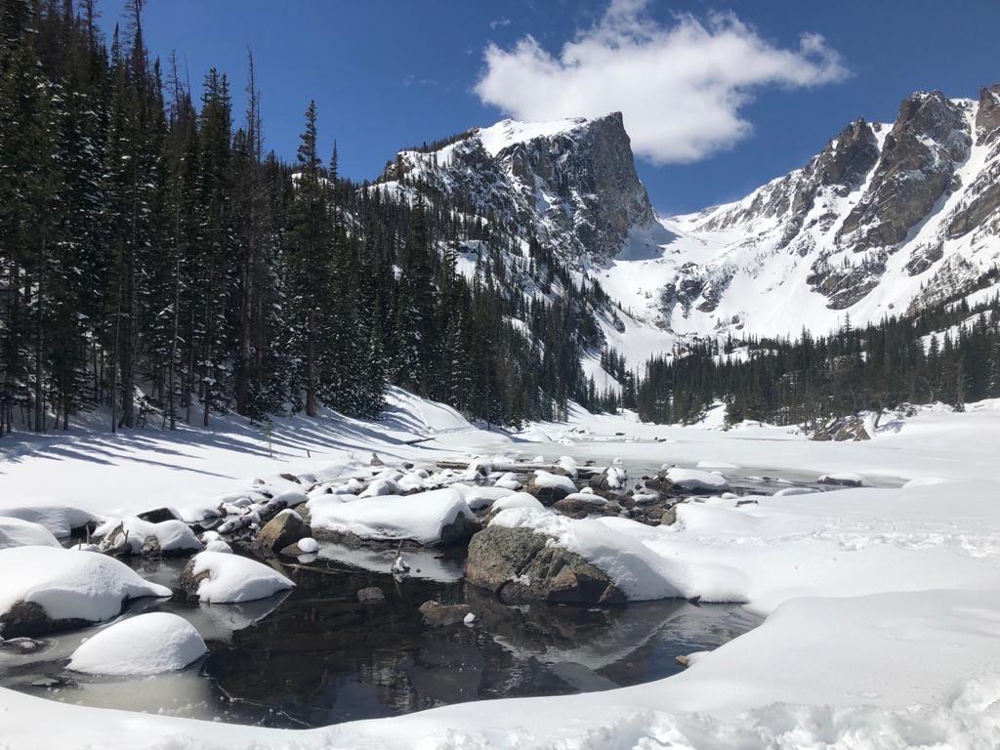
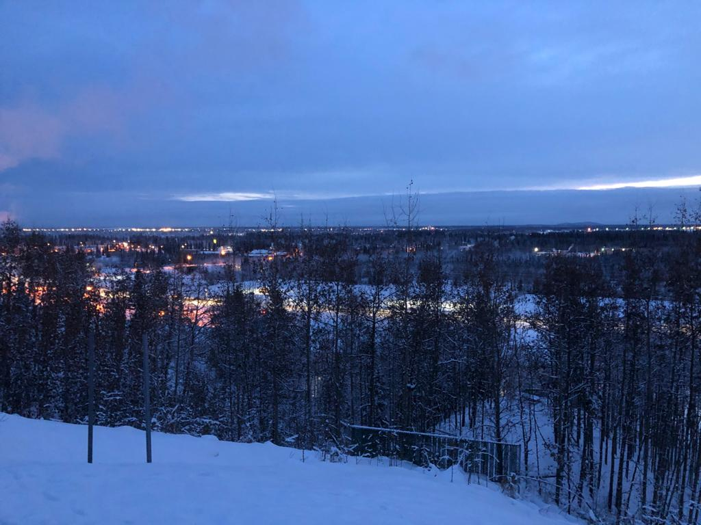
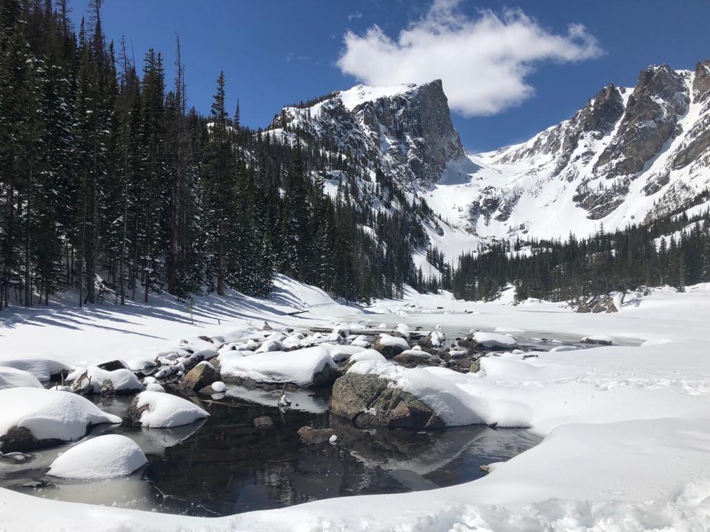
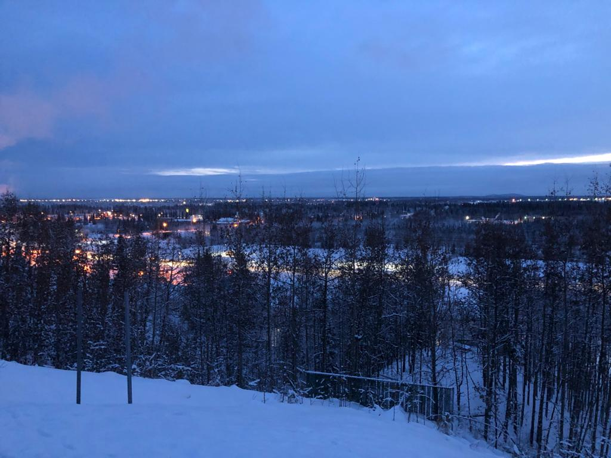

Who Am I?

I use the knowledge and stories that data provide to track program effectiveness and advocate for the needs of those who get left behind. I'm a data scientist.
Biography
At the start of my career, I advocated for and created strategies or projects with a lens on social inclusion and a focus on the needs of community partners. During that time, I also learned to appreciate the power of numbers, data visualizations, and clear outcomes in explaining program impact and telling effective success stories. I am pursuing a Masters of Data Science to increase my capacity for analysis and data storytelling with training in statistics, Python, R, and Tableau, among other modalities. I am interested in the use of data to tackle social and international development issues, optimize program impact, and increase the transparency and credibility of organizations.
My Travels
In the era before the novel coronavirus, I enjoyed living in and traveling to a variety of places. Here are some pictures from places I've been:

 



Disclaimer:
The opinions expressed here are mine alone. The content on this website is not intended to reflect the views of any employers or colleagues past, present, or future.